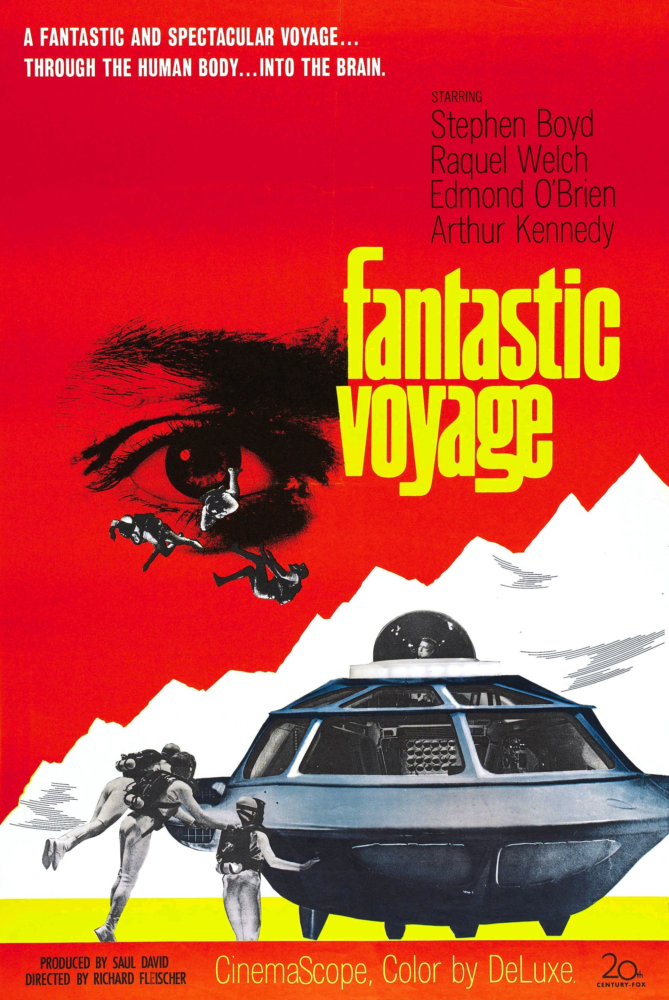

Fantastic Voyage
39th Academy Awards
(Oscars 1967)
5 Nominations, 2 Awards
| Nominations | ||
|---|---|---|
| Category | Nominees | Result |
| Cinematography (Color) | Ernest Laszlo | Nominated |
| Film Editing | William B. Murphy | Nominated |
| Art Direction (Color) | Dale Hennesy, Jack Martin Smith, Stuart A. Reiss, and Walter M. Scott | Won |
| Special Visual Effects | Art Cruickshank | Won |
| Sound Effects | Walter Rossi | Nominated |